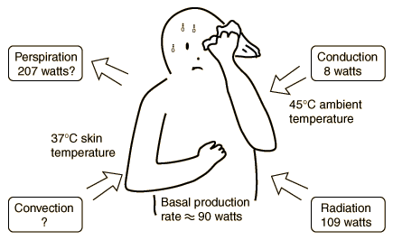

Cooling of the Human Body
This is an active graphic. Click on one of the heat transfer mechanisms for a discussion of its role in cooling the human body.

Even when inactive, an adult male must lose heat at a rate of about 90 watts as a result of his basal metabolism. This becomes a problem when the ambient temperature is above body temperature, because all three standard heat transfer mechanisms work against this heat loss by transferring heat into the body. Our ability to exist in such conditions comes from the efficiency of cooling by the evaporation of perspiration. At a temperature of 45 Celsius or 113 Fahrenheit the evaporation process must overcome the transfer of heat into the body and give off enough heat to accomplish a 90 watt net outward flowrate of energy. Because of the body's temperature regulation mechanisms, the skin temperature would be expected to rise to 37°C at which point perspiration is initiated and increases until the evaporation cooling is sufficient to hold the skin at 37°C if possible. With those assumptions about the temperatures, the Stefan-Boltzmann law for an area of 2 m2 and emissivity 0.97 gives a net input power of 109 watts to the body. The perspiration cooling must overcome that and produce the net outflow of 90 watts for equilibrium.
|
Index
Heat transfer concepts
Heat transfer examples |